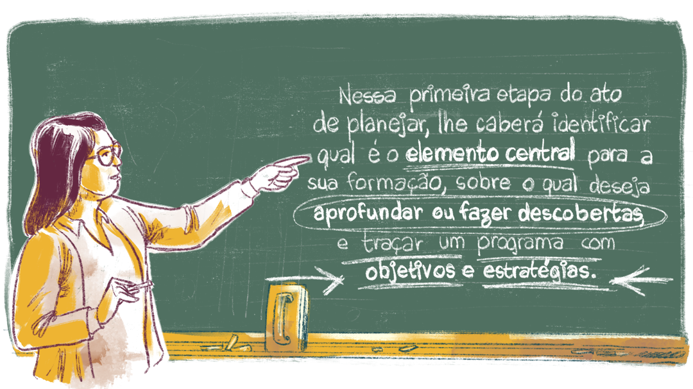

Definindo um fio condutor
Neste curso, pretende-se que seja definido um fio condutor para a sua formação durante o período de execução do Núcleo Comum, com o apoio de professores formadores e da tutoria. Lembre-se:

Título: Definindo o objeto de sua investigação
Fonte: Brasil (Não publicado).
Elaboração: Prosa (2024c).
Então, agora é a hora de definir o que se deseja investigar e dar prosseguimento ao trabalho.
Ao nos depararmos com as questões que nos desafiam cotidianamente, cabe uma ampla reflexão acerca das diferentes matrizes teóricas que dão suporte à produção de novos conhecimentos de que necessitamos, a fim de resolvermos, entendermos ou, ainda, aprofundarmos nosso conhecimento a respeito do problema que nos inquieta.
Nesse sentido, o primeiro passo é delinear os contornos do seu objeto de investigação.
Normalmente, a análise do contexto do problema já oferece vários indícios dos enfoques que serão dados no estudo. Cabe lembrar que, para ser coerente com a perspectiva epistemológica deste curso, a formulação do problema de investigação precisa apontar as relações mais amplas do objeto a partir de seu contexto, que é sempre complexo e repleto de contradições.
Dentro da perspectiva assumida neste curso, os problemas a serem investigados se vinculam ao entendimento da articulação entre trabalho, enquanto conceito ontológico, e ciência, tecnologia, cultura e sociedade. Isso porque a complexidade existente no cotidiano escolar apresenta desafios permanentes aos docentes.
.png)
Título: Os desafios enfrentados no cotidiano escolar na bagagem do educador
Fonte: Prosa (2024d).
A cultura escolar, as políticas educacionais, as práticas escolares de diferentes níveis e modalidades de ensino, os desafios trazidos pelos avanços tecnológicos, a evasão, o abandono e a inclusão social, intelectual, física de pessoas considerando as suas diversidades étnicas, etárias, territoriais e de orientações sexuais são apenas alguns exemplos desses desafios.